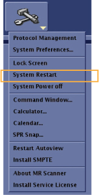
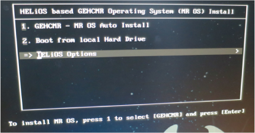
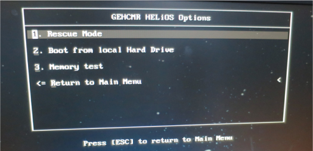
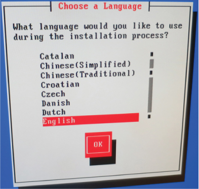
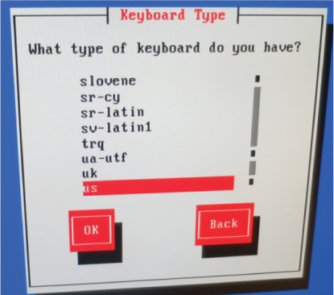
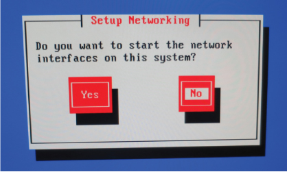
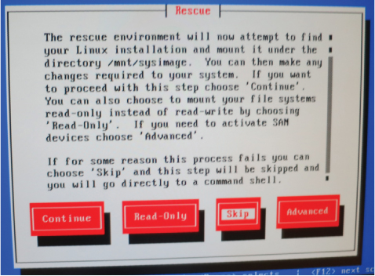
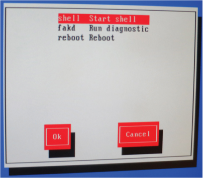
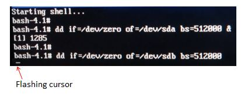
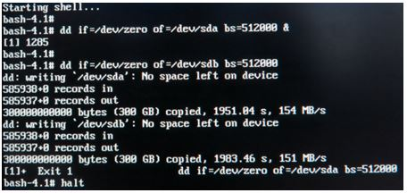

- 00000018WIA307EDF20GYZ
- id_131062401.4
- Jul 5, 2019 11:18:59 PM
Dell T5810 Computer Replacement
Prerequisites
| Personnel requirements | |||
|---|---|---|---|
| Required persons | Preliminary requirements | Procedure | Finalization |
| 2 | - | 60 minutes | 120 minutes |
| Tools and test equipment | |||
|---|---|---|---|
| Item | Quantity | Part number | Manufacturer |
| Screw driver set | 1 | - | - |
| - |
| - | |
| Replacement parts | |||
|---|---|---|---|
| Item | Quantity | Part number | Manufacturer |
| Dell T5810 computer | 1 |
Refer to FRU manual | - |
| Dust filter (if needed) | 1 | - | - |
| ||||
About this task
Overview
This procedure provides instructions to replace the Dell T5810 host computer with a new one.
Prepare the Workstation for Host Computer Removal
Procedure
- Ask the customer to archive all images to an external storage device such as a PACS or DVDs.
- Perform a Save Info.
- To ensure patient privacy wipe all patient data from the hard drives. This will also wipe all data from the hard drive. This is done by following the steps below:
- Open DVD drive, insert Linux OS Software DVD into the DVD drive of Host computer.
- Perform System Restart by clicking the arrow on the Tools High Level Access tab, selecting System Restart and clicking [Yes] to confirm the restart.
Figure 1. System Restart 
- At the Linux installation prompt, select HELiOS/SUSE Option.
Figure 2. OS Install Prompt 
- At the HELiOS/SUSE Option prompt, boot the Linux DVD using the rescue mode by selecting Rescue Mode.
Figure 3. HELiOS/SUSE Option Prompt 
- Select English for Language.
Figure 4. Language 
- Select us for Keyboard Type.
Figure 5. Keyboard Type 
- Select No for Setup Networking.
Figure 6. 
- Select Skip for Rescue Menu.
Figure 7. Rescue Menu 
- Select shell Start shell.
Figure 8. shell Start shell 
- When the prompt displays (prompt will be bash—4.1#), type the following command and press [Enter]:
dd if=/dev/zero of=/dev/sda bs=512000 &
- When the rescue prompt is displayed again, type the following command and press [Enter]:
dd if=/dev/zero of=/dev/sdc bs=512000
Note:When the commands are executing, the system will display only a flashing cursor. If the screen goes dark, hit a key on the keyboard to “wake up” the screen. The disk wipe takes about 30-40 minutes to complete. Ignore any messages indicating there is no space left on the device, for example:
dd: writing `/dev/sdb’ : No space left on device.
Figure 9. 
- The disk wipe is complete when the bash—4.1# prompt appears. Eject and remove the OS DVD, then shut down the system by typing halt.
Figure 10. Example of completion of PC disk wipe 
- Power OFF Host Computer.
- Perform LOTO on the GOC/operator workspace. See Lockout/Tagout of the GOC.
Remove Host Computer from GOC
Procedure
- Remove all the cables connected to the host computer.
Confirm that the cables are properly labeled. Note their locations for reattachment.
Figure 12. Dell T5810 Cable Configuration 
Finalization
Procedure
Repackage the defective PC for return.Notice